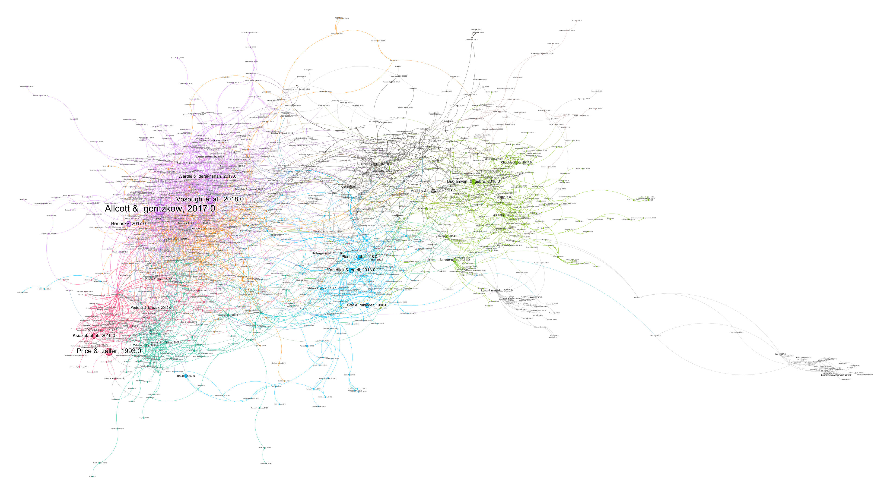
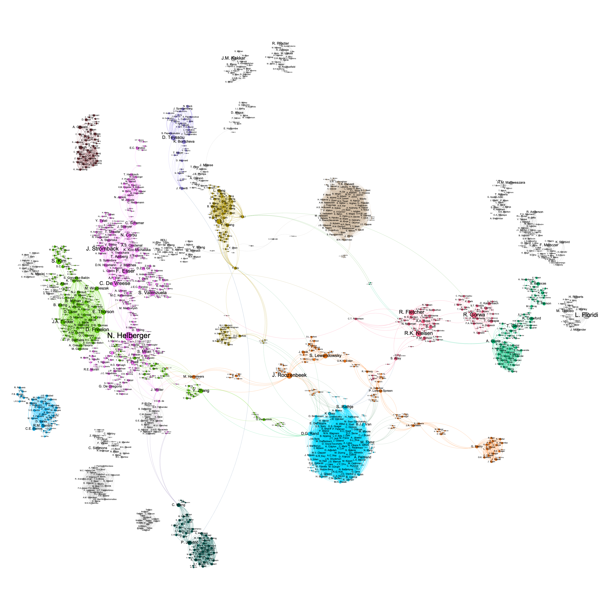

Project description
In this project in partnership with the Weizenbaum Institut, I map academic citations, co-authorship relations, and funding streams in of the literature on disinformation using traditional and LLM-based natural language processing. Preliminary results confirm that, in studying the societal effects of social media (especially in the dominating fields of communication, psychology, and political science), the field is highly influenced by the US academic tradition, and the study of its media and political system. On the other hand, European scholars are highly referenced in the study of data governance – often funded by public national and European public authorities. On average, scholars from the global majority world remain peripheric in the field. These trends seem to be reinforced by co-authorship and funding patterns.
Articles co-citation network.

Co-authorship network.
